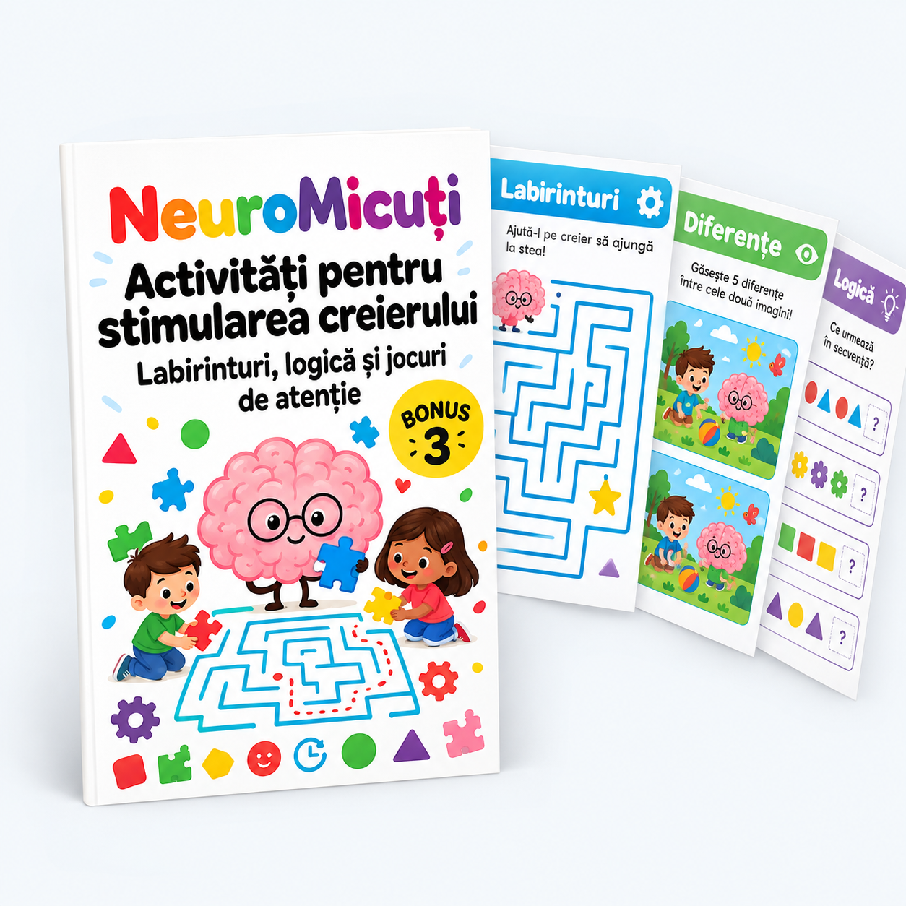

22 de activități gata de printat, ordonate de la simplu la complex.
Printează câte o pagină, dă-i copilului un creion și lasă-l să lucreze singur. Intervii doar dacă îți cere ajutorul.
| Tip | Ce antrenează | Vârsta | Câte sunt |
|---|---|---|---|
| Labirinturi | Planificare, vizualizare spațială | 3-14 ani | 8 |
| Diferențe | Atenție la detalii, comparare | 4-12 ani | 6 |
| Logică | Raționament, clasificare, secvențe | 5-14 ani | 8 |
8 labirinturi de la simplu la complex. Scopul: să găsești drumul de la START la FINAL.
Ajută pisica să ajungă acasă. Trasează cu creionul drumul corect, fără să atingi pereții.
Găsește drumul prin grădină de la poartă la bancă. Un singur drum e corect.
Ajută peștele să ajungă în mare. Alege drumul corect printre corali.
Cavalerului trebuie să ajungă la castel. Sunt 3 drumuri false — doar unul duce la poartă.
[Printează și completează cu creionul]
Submarinul caută comoara. Trasează drumul evitând pereții.
Minerul caută comoara. Drumuri false te duc în fundătură — gândește înainte de a trasa.
Găsește drumul prin străzile orașului. Atenție: mai multe drumuri par corecte, dar doar unul duce la ieșire.
Cel mai complex labirint. Pornește de la START și ajunge la FINAL fără să treci prin pereți. Poate dura mai multe încercări — asta e partea bună.
6 perechi de imagini descrise — copilul citește ambele descrieri și marchează ce s-a schimbat.
Versiunea text: copilul compară două descrieri și subliniază cuvintele care diferă. Antrenează atenția la detalii și citirea atentă.
Găsește 5 diferențe între cele două descrieri:
Imaginea A:
Pe raft sunt 3 cărți. Mingea e roșie. Ursulețul stă pe pat. Fereastra e deschisă. Pe perete e un poster cu un avion.
Imaginea B:
Pe raft sunt 4 cărți. Mingea e albastră. Ursulețul stă pe scaun. Fereastra e închisă. Pe perete e un poster cu o rachetă.
Subliniază cele 5 cuvinte care diferă în descrierea B.
Găsește 6 diferențe:
Imaginea A:
În parc sunt 2 copii. Unul poartă tricou verde. Banca e sub un stejar. Cerul e senin. Un câine maro doarme lângă fântână. Sunt 4 flori lângă alee.
Imaginea B:
În parc sunt 3 copii. Unul poartă tricou galben. Banca e sub un brad. Cerul e înnorat. Un câine negru doarme lângă fântână. Sunt 6 flori lângă alee.
Găsește 7 diferențe:
Imaginea A:
Pe masă sunt 3 farfurii. Cana e albă cu dungi albastre. Pe frigider e un magnet cu o pisică. Ceasul arată ora 3. Fructiera are mere și banane. Perdeaua e deschisă.
Imaginea B:
Pe masă sunt 4 farfurii. Cana e roșie cu dungi verzi. Pe frigider e un magnet cu un câine. Ceasul arată ora 6. Fructiera are pere și portocale. Perdeaua e închisă.
Găsește 8 diferențe:
Imaginea A:
La tablă scrie „Bună dimineața". Sunt 5 bănci. Profesoara poartă ochelari rotunzi. Pe perete e o hartă a Europei. Ceasul e rotund și arată 9:00. Ghiozdanul din colț e roșu. Pe catedră e un glob.
Imaginea B:
La tablă scrie „Bună ziua". Sunt 6 bănci. Profesoara poartă ochelari pătrați. Pe perete e o hartă a lumii. Ceasul e pătrat și arată 10:00. Ghiozdanul din colț e albastru. Pe catedră e un microscop.
Găsește 9 diferențe:
Imaginea A:
Gardul e din lemn. Sunt 3 rânduri de legume. Soarele e în stânga. Roșiile sunt roșii. Găleata e verde cu 2 unelte înăuntru. Fluturele e galben. Căsuța păsărilor e pe un stâlp scurt. Pisica doarme pe bancă. Sunt 4 nori pe cer.
Imaginea B:
Gardul e din piatră. Sunt 4 rânduri de legume. Soarele e în dreapta. Roșiile sunt verzi. Găleata e albastră cu 3 unelte înăuntru. Fluturele e portocaliu. Căsuța păsărilor e pe un stâlp înalt. Pisica doarme pe iarbă. Sunt 6 nori pe cer.
Găsește 10 diferențe:
Imaginea A:
Pe masă sunt 3 eprubete. Lichidul din balon e albastru. Microscopul e negru. Posterul de pe perete arată sistemul solar. Lampa e aprinsă. Halatul are 2 buzunare. Ochelarii de protecție sunt transparenți. Ceasul arată 14:00. Pe raft e un model de ADN. Eticheta de pe sticlă scrie „H₂O".
Imaginea B:
Pe masă sunt 5 eprubete. Lichidul din balon e verde. Microscopul e argintiu. Posterul de pe perete arată tabelul periodic. Lampa e stinsă. Halatul are 3 buzunare. Ochelarii de protecție sunt galbeni. Ceasul arată 16:00. Pe raft e un model de atom. Eticheta de pe sticlă scrie „NaCl".
8 jocuri care antrenează raționamentul, clasificarea și gândirea în secvențe.
Completează secvența cu forma potrivită:
Răspuns: ___________
Ce număr urmează?
2 — 4 — 6 — 8 — ___
1 — 3 — 5 — 7 — ___
10 — 20 — 30 — 40 — ___
Într-un rând de 4 elemente, unul nu aparține grupului. Încercuiește-l:
(3 sunt fructe, 1 e legumă)
(3 sunt animale, 1 e obiect)
(3 sunt obiecte de școală, 1 e de sport)
Completează grila astfel încât fiecare rând și fiecare coloană să conțină: 🔴 🔵 🟢 🟡 (fiecare o singură dată).
| 🔴 | ___ | 🟢 | ___ |
| ___ | 🟢 | ___ | 🔴 |
| 🟢 | ___ | 🟡 | ___ |
| ___ | 🔴 | ___ | 🟢 |
Citește indiciile și răspunde:
Întrebări:
Fiecare literă e înlocuită cu un număr. Descifrează cuvintele:
Cod: A=1, B=2, C=3, D=4, E=5, F=6, G=7, H=8, I=9, L=12, M=13, N=14, O=15, R=18, S=19, T=20, U=21
3-1-19-1 = ___________
13-1-18-5 = ___________
19-20-5-12-5 = ___________
Completează cu cuvântul care lipsește:
Citește indiciile și completează tabelul:
| Copil | Animal | Culoare |
|---|---|---|
| Ana | ___________ | ___________ |
| Bogdan | ___________ | ___________ |
| Clara | ___________ | ___________ |
Verifică răspunsurile DOAR după ce ai încercat singur.
#1: Jos → Dreapta → Jos → Dreapta → Jos → Dreapta
#2-#8: Urmează pereții — un singur drum nu se termină într-o fundătură.
#1: 4 cărți, albastră, scaun, închisă, rachetă
#2: 3 copii, galben, brad, înnorat, negru, 6 flori
#3: 4 farfurii, roșie, verzi, câine, 6, pere+portocale, închisă
#4: Bună ziua, 6 bănci, pătrați, lumii, pătrat, 10:00, albastru, microscop
#5: piatră, 4 rânduri, dreapta, verzi, albastră, 3 unelte, portocaliu, înalt, iarbă, 6 nori
#6: 5 eprubete, verde, argintiu, tabelul periodic, stinsă, 3 buzunare, galbeni, 16:00, atom, NaCl
#1: 🔵 (secvență alternantă)
#2: 10, 9, 50
#3: 🥕, 🪑, ⚽
#4: R1: 🔴🟡🟢🔵 · R2: 🔵🟢🔴🟡 · R3: 🟢🔵🟡🔴 · R4: 🟡🔴🔵🟢 (varianta posibilă, verifică doar rândul și coloana)
#5: Ana, Dan, Da
#6: CASA, MARE, STELE
#7: pasăre, cina, soare, a auzi, a picta
#8: Ana=hamster/albastru, Bogdan=câine/roșu, Clara=pisică/verde
Alege un labirint și un joc de logică potrivite vârstei copilului tău și fă-le azi. Dacă termină repede, treci la nivelul următor.
Apoi deschide materialul principal NeuroMicuți pentru activități de concentrare și memorie care completează aceste exerciții de logică.